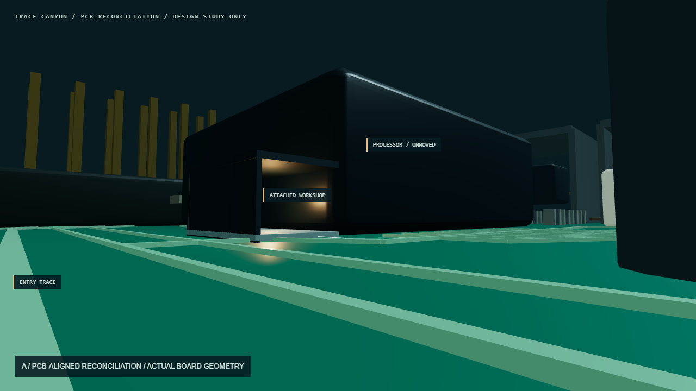
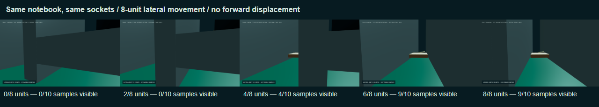
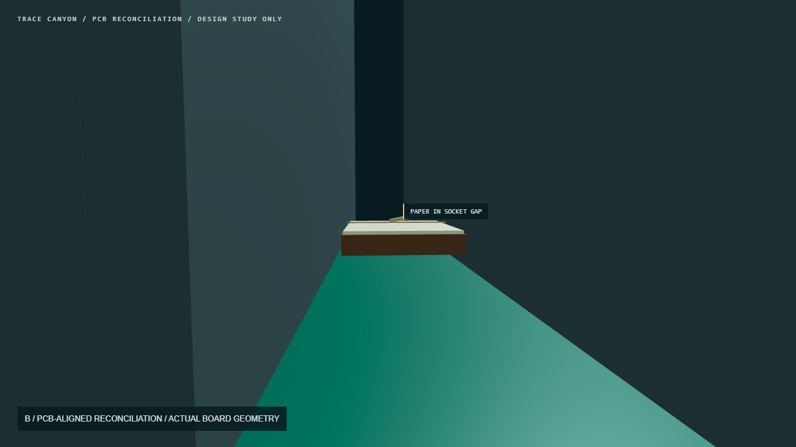
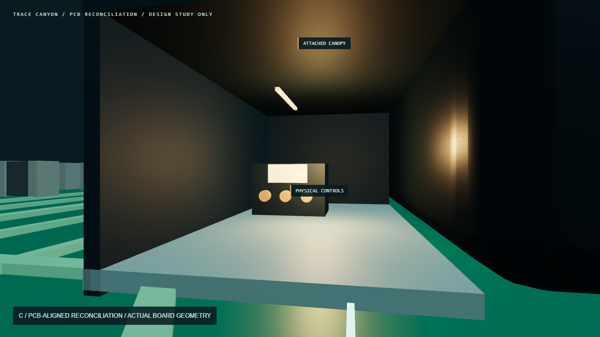

PCB reconciliation: unchanged production board geometry at its existing 100× transform. Attached workshop and notebook are proposals. No application changes.

A. Exact entry position, rotated toward the processor. Physical PCB positions put GPIO on the left and processor on the right.

Reveal sweep. Pure sideways movement: 33 positions × 10 book points. Partial visibility begins at 3.5/8 units; at least 8/10 points stay visible throughout the last 3.5 units.

B. The book occupies the real six-unit gap between unchanged sockets.

C. An attached canopy creates the workshop recess; the original processor has no walk-in void and is neither lifted nor carved.